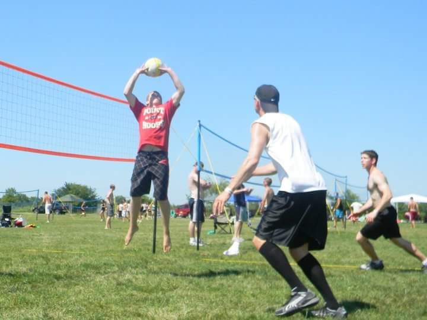
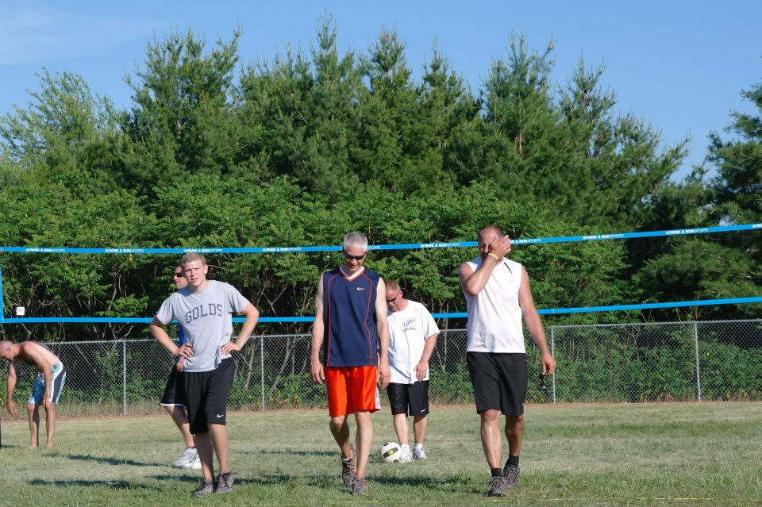
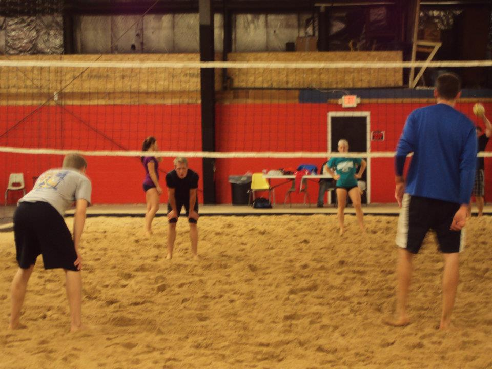

My name is Nicholas Underwood and I am 24 years old. I was married this last New Year's Eve to my wonderful wife Mikala and we packed up and moved to Port Washington, WI. Growing up volleyball started out as something I didn't like very much. Almost every weekend my parents would play in a volleyball tournament. I would go from being ball boy to passing with anyone who was willing. At the same time this was probably the main reason that I got into volleyball. My father was nicknamed "The Legend" and has won or played in a lot of the tournament listed on the tournament page. He played at the "Open" level which is the highest level of play. He was also inducted into the Hall of Fame the other year at the Waupaca Boatride volleyball tournament.
As a freshman in High School was when I really started to switch to playing volleyball. Growing up I played basketball, football, soccer, and baseball changing in the car from one sport to another. During football my freshman year I tore my ACL and had to take time off from sports. When I healed I decided that I wanted to play volleyball with my dad. He was finally willing to play with me after 20+ years playig at the highest level. When we started out it was a learning curve but eventually we got good enough together even at his age and my height to play at a high level. This bond made me really close with my father and is one of the reasons I love volleyball.
I recently got married this last New Year's Eve to my amazing wife, who I happened to meet through volleyball. The bond between my father and I transitioned from father to son into becoming best friends. This is why he was the Best Man at my wedding along with 8 other groomsmen which 5 of them I met from playing volleyball. Overall volleyball hasn't just been something for me to do it has become a way of life with a great community of friends.
Waupaca Boatride
Wiggly Field
Player's Lounge
